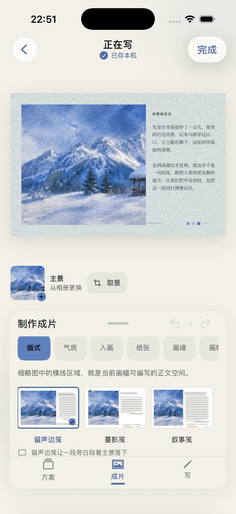
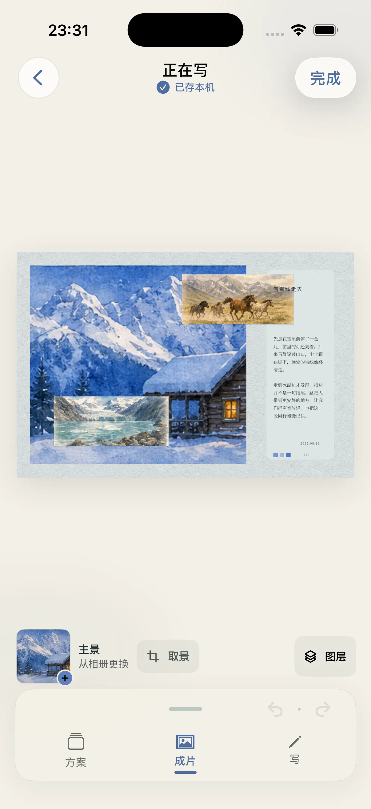
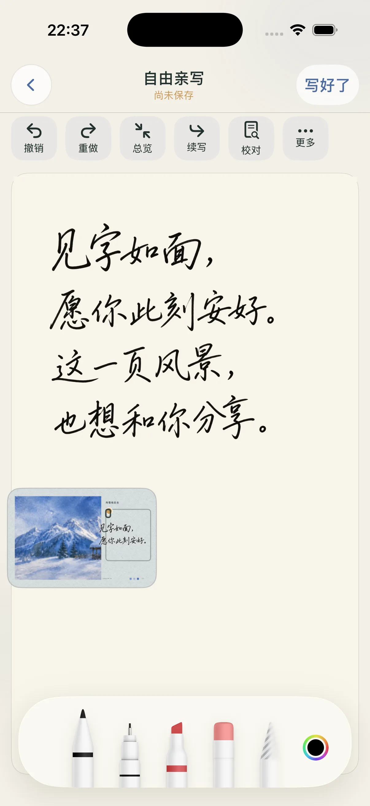
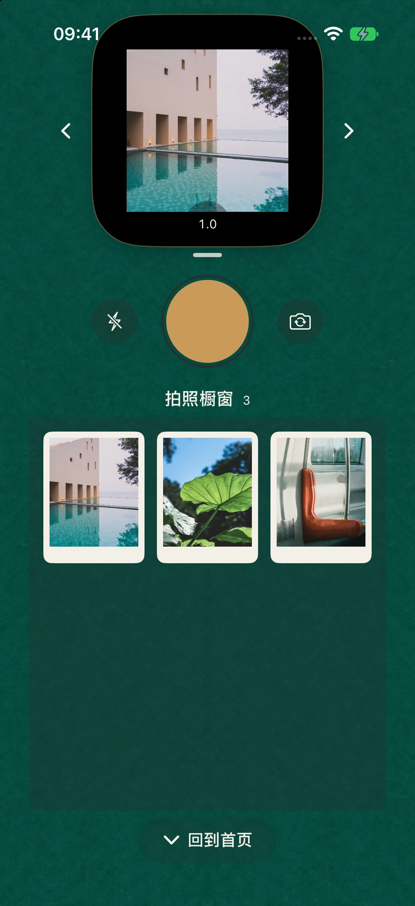
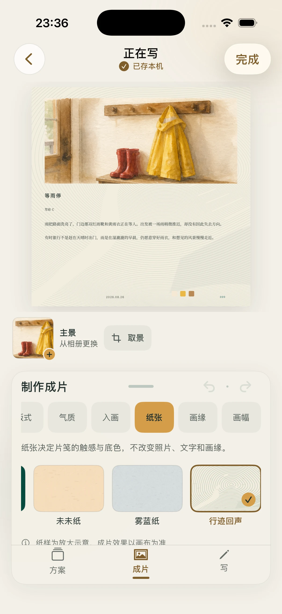
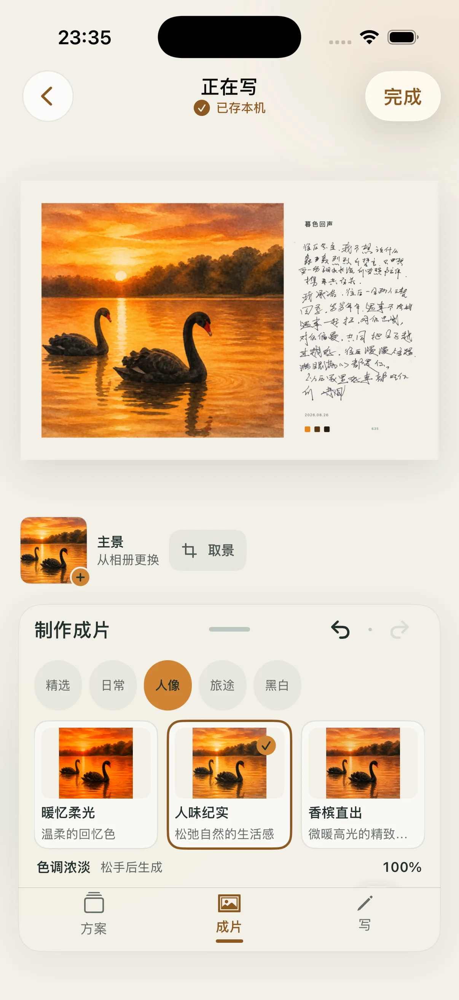
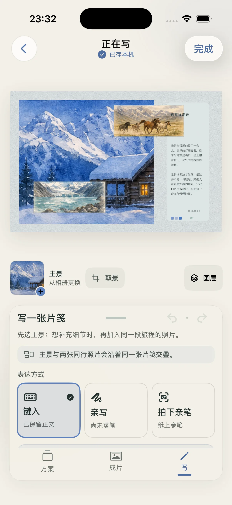

想起一个人，
就写一张片笺。
拍下或选一张照片，写上自己的字，也可以留一段声音。
把这一刻做成可保存、分享的数字明信片。
支持 iPhone 与 iPad · 提供 App 内购买




照片、纸张和你自己的话，都在这一张里。
拍下此刻
首页二楼，
打开片笺小相机。
在带灵动岛的 iPhone 上，小相机从顶部展开。选一种胶片气质，按下快门，看照片在相纸上慢慢显影。

片笺小相机与本机照片橱窗
新照片留在本机橱窗。拍摄不会自动上传，也不会自动保存到系统相册。
-
下拉，打开小相机
在 iPhone 或 iPad 首页滑到顶部，再继续下拉进入拍摄台。
-
拍下，等它显影
相纸先出现，照片随之清晰。轻点或轻摇，可以加快显影。
-
留在橱窗，或写成片笺
照片留在本机橱窗。点开放大、保存到相册，或用它继续制作片笺。
从一张照片，
写成一张片笺。
在版式、纸张、画面与书写之间来回调整，整张片笺始终在眼前。
给风景，也给文字，
留出合适的位置。
选择画幅和版式，把一张照片或几处风景安放好。寄语、日期与留白，组成这一页的节奏。
- 多种画幅与照片编排
- 纸张与画缘自由搭配
- 直接在成片预览里调整
为这一刻，
挑一张合适的纸。
挑选纸色和纹理，看看它如何衬托照片与文字。每一次选择都能在成片里预览。
- 不同纸色与纹理
- 与当前照片和版式搭配
- 在成片预览中挑选

让照片，
有你喜欢的样子。
从原色到不同的画面气质，在成片里直接比较，选出适合这张照片的一种。
- 从自己的照片或 Live Photo 开始
- 选择适合照片的画面气质
- 多张照片可以一起编排

想说的话，
用自己的方式写。
把想说的话键入、亲写，或拍下纸上的字，再把它放到片笺里合适的位置。
- 手指与 Apple Pencil 书写
- 文字样式与排版
- 拍下纸上已经写好的字

把你的笔迹，
留在这一张里。
在专注的画布上写下自己的字，再放回片笺。笔画与节奏，会一起留在成片里。
- 专注的书写空间
- 把笔迹放回作品里校对
- 草稿留在设备上继续写
也可以从片笺集开始。 挑一张喜欢的完整作品，再用自己的照片和话继续写。
见字如面。
在专注的画布上写下自己的字，再放回片笺。笔画与节奏，会一起留在成片里。
- 直接亲写
- 用手指写，或在 iPad 上拿起 Apple Pencil。
- 拍下亲笔
- 把纸上写好的字，带到这张片笺里。
- 也可以键入
- 挑选文字样式，认真放好每一句话。
动笔前，
你可能想知道。
关于保存、声音和照片处理，这里说清楚。
可以免费开始吗？
普通编辑与最终校对可免费体验。每个 App Store 身份的首张成功保存或分享免费，首次领取需要联网。之后的新作品按张解锁，价格以 App Store 展示为准。同一已交付作品再次保存或分享无需重复解锁。
动态与声音怎样保存？
可以保存静态照片，也可以用 Live Photo 留下动态与声音。静态照片不保留声音，Live Photo 的播放和分享效果取决于接收平台是否支持。
照片会上传吗？
普通编辑、书写、草稿与录音在设备上处理。可选 AI 创作需要联网，只有经你确认，当前主景的处理副本才会发送至片笺云服务和第三方 AI 图像生成服务。笔迹、寄语与录音不随之上传。